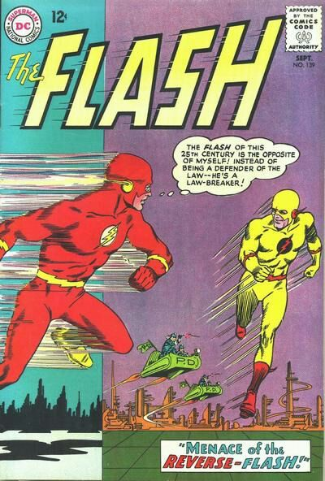
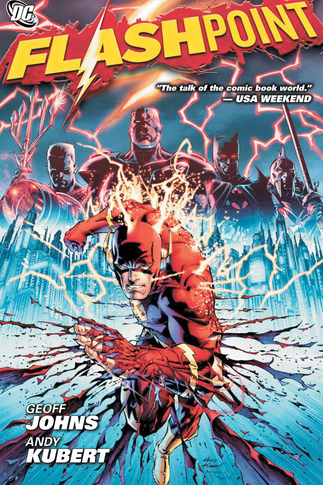

Origen
Nacido de Henry y Nora Allen, Barry Allen fue un cientifico forence, con una buena reputacion en la policia. Una noche, mientras se prepara para dejar el trabajo, un relámpago que entra por una ventana y cae en una caja llena de productos químicos y estos son derramados sobre Allen. Como resultado de ello, Allen descubre que puede que tiene reflejos y puedecorrer muy rápido. Él se pone un conjunto de malla roja luciendo un rayo, catalogandose a sí mismo como Flash (en honor al héroe de su infancia de los cómics, Jay Garrick) por lo que se convierte en un combatiente del crimen en Central City.
Su traje es almacenado en un anillo, mientras que Allen se encuentra en su identidad civil. El anillo puede expulsar de la ropa comprimida cuando Allen la necesita y lo aspira de nuevo con la ayuda de un gas especial que reduce la demanda. Además, Allen inventó el Rueda Cósmica, un dispositivo que permitió realizar viajes en el tiempo. Allen es tan bien visto que casi todos los velocistas que vienen después de él constantemente se comparan con él.

Su Reverso
Flash conoce a su contraparte mas conocida de todos los comics, Revers Flash o Flash Reverso fue el causante de la gran mayorias de desgracias del personaje The Flash, especialmente de Barry Allen. Flash Reverso fue la razon de la muerte de la madre de Barry y del arresto del padre, tambien a causado la muerte de Barry en algunos volumene, el secuestro o muerte de sus parejas y uno de los villanos en el comic y en la pelicula de FlashPoint o Punto Flash
FlashPoin
En la historia de FlashPoin, Barry decidio detener el asecinato de su madre en el dia del cumpleaños de la misma, al viajar al pasado y cambiar ese suseso, muchos eventos cambiaron, como un efecto domino. Los cambios mas destecados son:
- La nula existencia de Flash.
- La madre de Barry sigue con vida.
- Thomas Wayne toma el manto de Batman tras la muerte de su hijo en el callejon.
- Marta Wayne toma el manto del Joker tras la muerte de su hijo en el callejon
- Acuaman y Daiana terminan en guerra.
- Cyborg trabaja con el gobierno.
- Superman fue encontrado por el gobierno y pribado de su poder.
Aunque, hasta el final, Barry Allen piensa que el culpable de ese cambio en la realidad es Flash Reverso. Barry conoce al Batman de Thomas Weyne, Thomas Wayne lleva a Barry con la familia Trueno para que eviten que la memoria de Barry siga cambiando, pero no lo logran, Flash decide unirse a Cyborg para detener a Wonder Woman y Aquaman y convence a Thomas de ayudarlos, cuando llegan a la guerra en Inglaterra, son atacados por todos lados, donde tambien aparace Revers Flash, donde ecurre una gran pelea que finaliza con Revers reciviendo un tiro en la cabeza por batman. Ahora que Reverso ya no consume la fuerza de velocidad, Flash decide volver en el tiempo y evitar que el mismo cambie el pasado.
| # | Comic | Volumen | Fecha |
|---|---|---|---|
| 1 | The Flash | The Flash #4 | Noviembre 1956 |
| 2 | Menace of the Reverce-Flash | The Flash #139 | Septiembre 1963 |
| 3 | FlashPoint | Mayo 2011 | |